2024 National 5 Biology - Paper 2 questions
Source: Scottish Qualifications Authority (SQA) / Qualifications Scotland. This is a StemInteract HTML companion, not an official HTML edition. Selectable text is supplied alongside original page images. Use the images or original PDF for equations, powers, fractions, vector notation, tables and diagrams; text extraction cannot fully preserve mathematical layout.
Jump to a question
PDF page 1
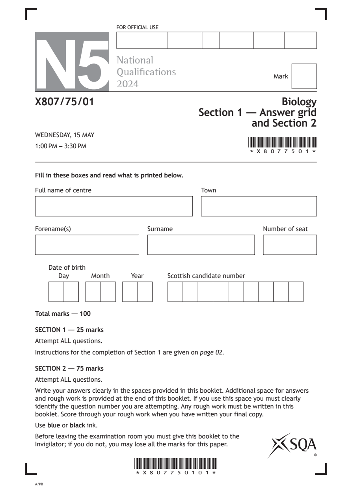
Selectable page text
FOR OFFICIAL USE
N5
National
Qualications
Mark
2024
X807/75/01 Biology
Section 1 — Answer grid
and Section 2
WEDNESDAY, 15 MAY
1:00 PM – 3:30 PM
*X8077501*
Fill in these boxes and read what is printed below.
Full name of centre Town
Forename(s) Surname Number of seat
Date of birth
Day Month Year Scottish candidate number
Total marks — 100
SECTION 1 — 25 marks
Attempt ALL questions.
Instructions for the completion of Section 1 are given on page 02.
SECTION 2 — 75 marks
Attempt ALL questions.
Write your answers clearly in the spaces provided in this booklet. Additional space for answers
and rough work is provided at the end of this booklet. If you use this space you must clearly
identify the question number you are attempting. Any rough work must be written in this
booklet. Score through your rough work when you have written your final copy.
Use blue or black ink.
Before leaving the examination room you must give this booklet to the
Invigilator; if you do not, you may lose all the marks for this paper.
©
*X807750101*
A/PBPDF page 2

Selectable page text
SECTION 1 — 25 marks
The questions for Section 1 are contained in the question paper X807/75/02.
Read these and record your answers on the answer grid on page 03 opposite.
Use blue or black ink. Do NOT use gel pens or pencil.
1. The answer to each question is either A, B, C or D. Decide what your answer is, then fill in
the appropriate bubble (see sample question below).
2. There is only one correct answer to each question.
3. Any rough working should be done on the additional space for answers and rough work at
the end of this booklet.
Sample question
The thigh bone is called the
A humerus
B femur
C tibia
D fibula.
The correct answer is B — femur. The answer B bubble has been clearly filled in (see below).
A B C D
Changing an answer
If you decide to change your answer, cancel your first answer by putting a cross through it (see
below) and fill in the answer you want. The answer below has been changed to D.
A B C D
If you then decide to change back to an answer you have already scored out, put a tick (✓) to the
right of the answer you want, as shown below:
A B C D A B C D
or
*X807750102*
page 02PDF page 3

Selectable page text
SECTION 1 — Answer grid
*OBJ25AD1*
A B C D
1
2
3
4
5
6
7
8
9
10
11
12
13
14
15
16
17
18
19
20
21
22
23
24
25
*X807750103*
page 03 [Turn overPDF page 4

Selectable page text
[BLANK PAGE]
DO NOT WRITE ON THIS PAGE
*X807750104*
page 04PDF page 5
Paper 2, Question 1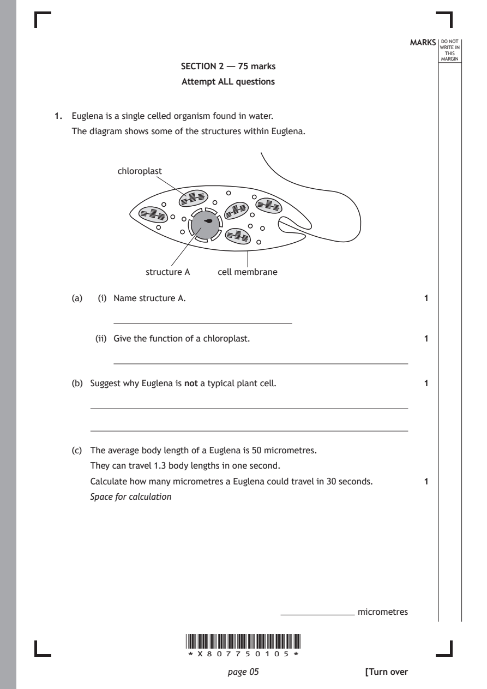
Selectable page text
MARKS _{W}^{D}_{R}^{O}_{I} _{T}^{N}OT
E IN
THIS
MARGIN
SECTION 2 — 75 marks
Attempt ALL questions
1. Euglena is a single celled organism found in water.
The diagram shows some of the structures within Euglena.
chloroplast
structure A cell membrane
(a) (i) Name structure A. 1
(ii) Give the function of a chloroplast. 1
(b) Suggest why Euglena is not a typical plant cell. 1
(c) The average body length of a Euglena is 50 micrometres.
They can travel 1.3 body lengths in one second.
Calculate how many micrometres a Euglena could travel in 30 seconds. 1
Space for calculation
micrometres
*X807750105*
page 05 [Turn overPDF page 6
Paper 2, Question 2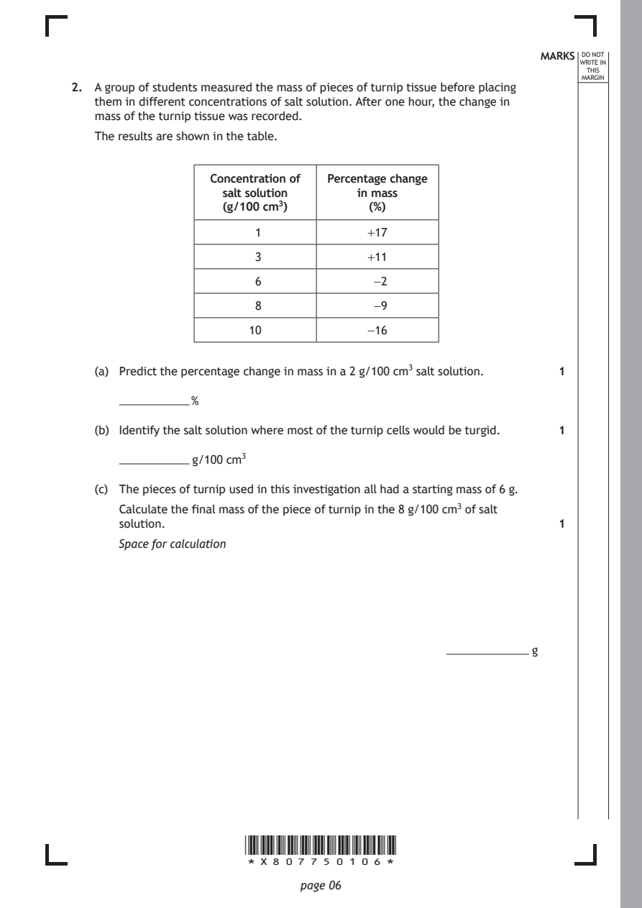
Selectable page text
MARKS _{W}^{D}_{R}^{O}_{I} _{T}^{N}OT
E IN
THIS
MARGIN
2. A group of students measured the mass of pieces of turnip tissue before placing
them in different concentrations of salt solution. After one hour, the change in
mass of the turnip tissue was recorded.
The results are shown in the table.
Concentration of Percentage change
salt solution in mass
(g/100 cm³) (%)
1 +17
3 +11
6 −2
8 −9
10 −16
(a) Predict the percentage change in mass in a 2 g/100 cm³ salt solution. 1
%
(b) Identify the salt solution where most of the turnip cells would be turgid. 1
g/100 cm³
(c) The pieces of turnip used in this investigation all had a starting mass of 6 g.
Calculate the final mass of the piece of turnip in the 8 g/100 cm³ of salt
solution. 1
Space for calculation
g
*X807750106*
page 06PDF page 7
Paper 2, Question 3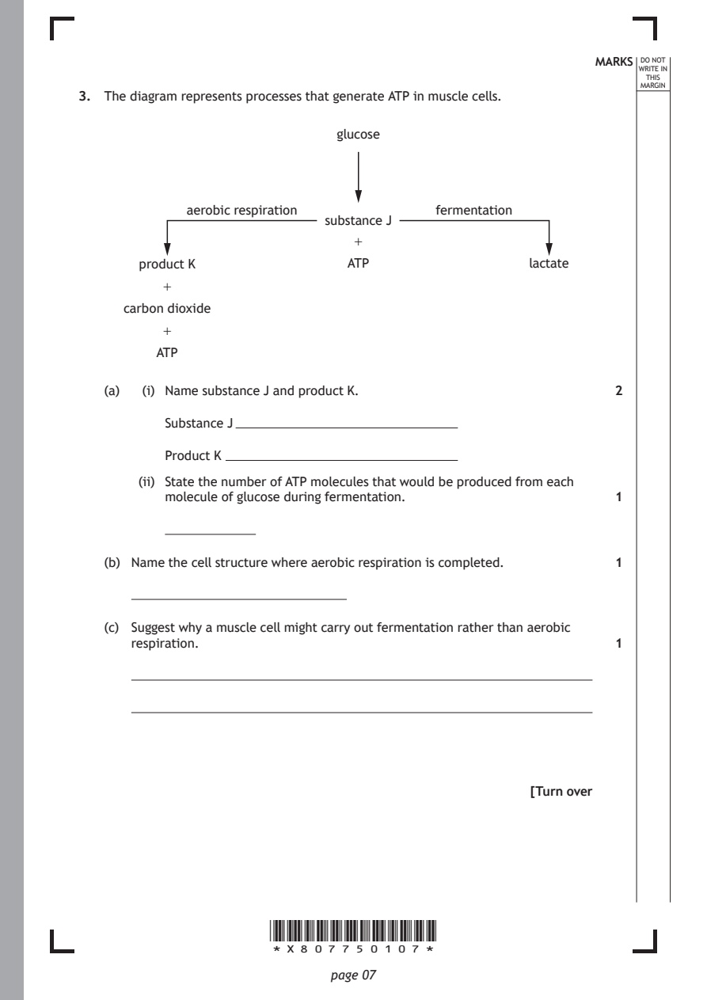
Selectable page text
MARKS _{W}^{D}_{R}^{O}_{I} _{T}^{N}OT
E IN
THIS
MARGIN
3. The diagram represents processes that generate ATP in muscle cells.
glucose
aerobic respiration fermentation
substance J
+
product K ATP lactate
+
carbon dioxide
+
ATP
(a) (i) Name substance J and product K. 2
Substance J
Product K
(ii) State the number of ATP molecules that would be produced from each
molecule of glucose during fermentation. 1
(b) Name the cell structure where aerobic respiration is completed. 1
(c) Suggest why a muscle cell might carry out fermentation rather than aerobic
respiration. 1
[Turn over
*X807750107*
page 07PDF page 8
Paper 2, Question 4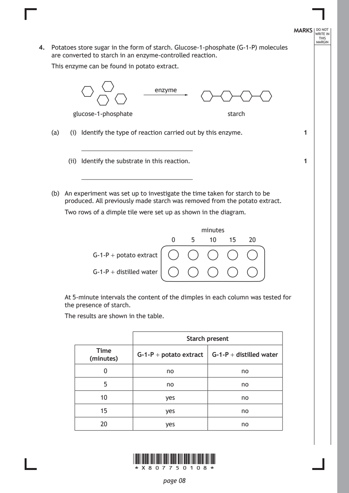
Selectable page text
MARKS _{W}^{D}_{R}^{O}_{I} _{T}^{N}OT
E IN
THIS
MARGIN
4. Potatoes store sugar in the form of starch. Glucose‑1‑phosphate (G‑1‑P) molecules
are converted to starch in an enzyme‑controlled reaction.
This enzyme can be found in potato extract.
enzyme
glucose-1-phosphate starch
(a) (i) Identify the type of reaction carried out by this enzyme. 1
(ii) Identify the substrate in this reaction. 1
(b) An experiment was set up to investigate the time taken for starch to be
produced. All previously made starch was removed from the potato extract.
Two rows of a dimple tile were set up as shown in the diagram.
minutes
0 5 10 15 20
G-1-P + potato extract
G-1-P + distilled water
At 5‑minute intervals the content of the dimples in each column was tested for
the presence of starch.
The results are shown in the table.
Starch present
Time
G‑1‑P + potato extract G‑1‑P + distilled water
(minutes)
0 no no
5 no no
10 yes no
15 yes no
20 yes no
*X807750108*
page 08PDF page 9
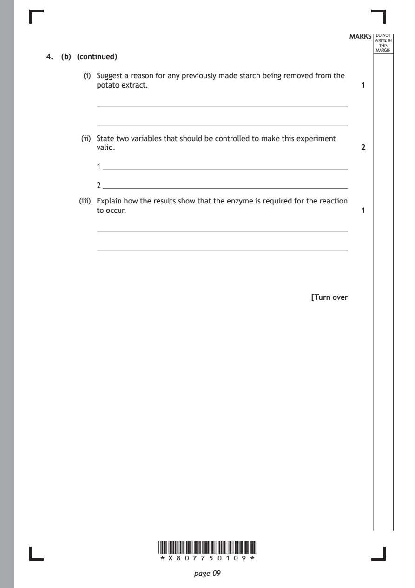
Selectable page text
MARKS _{W}^{D}_{R}^{O}_{I} _{T}^{N}OT
E IN
THIS
MARGIN
4. (b) (continued)
(i) Suggest a reason for any previously made starch being removed from the
potato extract. 1
(ii) State two variables that should be controlled to make this experiment
valid. 2
1
2
(iii) Explain how the results show that the enzyme is required for the reaction
to occur. 1
[Turn over
*X807750109*
page 09PDF page 10
Paper 2, Question 5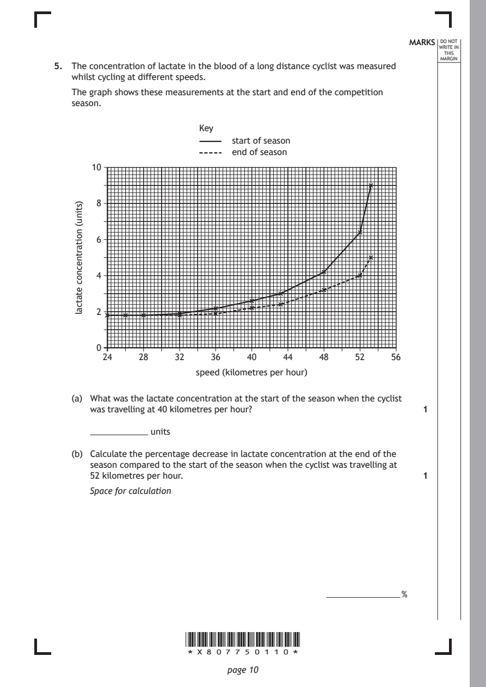
Selectable page text
MARKS _{W}^{D}_{R}^{O}_{I} _{T}^{N}OT
E IN
THIS
MARGIN
5. The concentration of lactate in the blood of a long distance cyclist was measured
whilst cycling at different speeds.
The graph shows these measurements at the start and end of the competition
season.
Key
start of season
end of season
10
8
6
4
2
0
24 28 32 36 40
speed (kilometres per hour)
*X807750110*
page 10
)stinu(
noitartnecnoc
etatcal
44 48 52 56
(a) What was the lactate concentration at the start of the season when the cyclist
was travelling at 40 kilometres per hour? 1
units
(b) Calculate the percentage decrease in lactate concentration at the end of the
season compared to the start of the season when the cyclist was travelling at
52 kilometres per hour. 1
Space for calculation
%PDF page 11
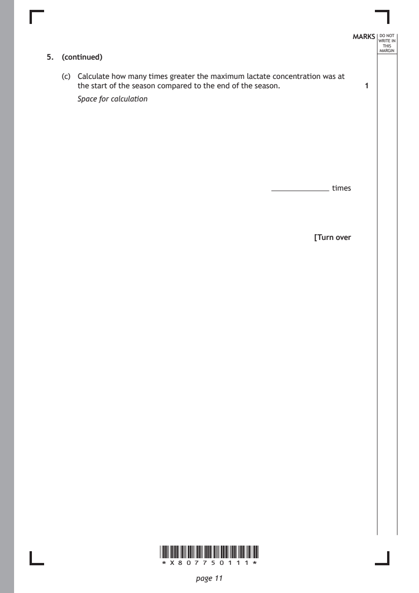
Selectable page text
MARKS _{W}^{D}_{R}^{O}_{I} _{T}^{N}OT
E IN
THIS
MARGIN
5. (continued)
(c) Calculate how many times greater the maximum lactate concentration was at
the start of the season compared to the end of the season. 1
Space for calculation
times
[Turn over
*X807750111*
page 11PDF page 12
Paper 2, Question 6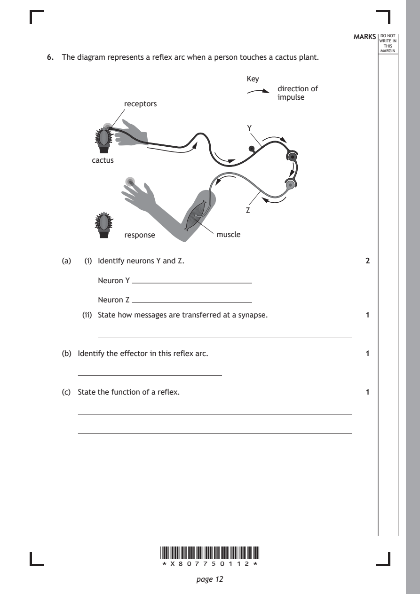
Selectable page text
MARKS _{W}^{D}_{R}^{O}_{I} _{T}^{N}OT
E IN
THIS
MARGIN
6. The diagram represents a reflex arc when a person touches a cactus plant.
Key
direction of
impulse
receptors
Y
cactus
Z
response muscle
(a) (i) Identify neurons Y and Z. 2
Neuron Y
Neuron Z
(ii) State how messages are transferred at a synapse. 1
(b) Identify the effector in this reflex arc. 1
(c) State the function of a reflex. 1
*X807750112*
page 12PDF page 13
Paper 2, Question 7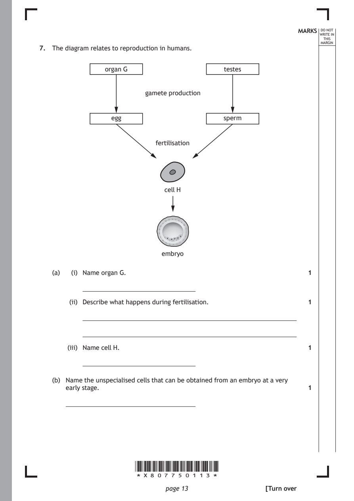
Selectable page text
MARKS _{W}^{D}_{R}^{O}_{I} _{T}^{N}OT
E IN
THIS
MARGIN
7. The diagram relates to reproduction in humans.
organ G testes
gamete production
egg sperm
fertilisation
cell H
embryo
(a) (i) Name organ G. 1
(ii) Describe what happens during fertilisation. 1
(iii) Name cell H. 1
(b) Name the unspecialised cells that can be obtained from an embryo at a very
early stage. 1
*X807750113*
page 13 [Turn overPDF page 14
Paper 2, Question 8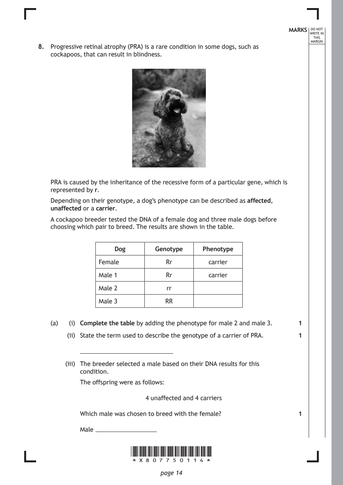
Selectable page text
MARKS _{W}^{D}_{R}^{O}_{I} _{T}^{N}OT
E IN
THIS
MARGIN
8. Progressive retinal atrophy (PRA) is a rare condition in some dogs, such as
cockapoos, that can result in blindness.
PRA is caused by the inheritance of the recessive form of a particular gene, which is
represented by r.
Depending on their genotype, a dog’s phenotype can be described as affected,
unaffected or a carrier.
A cockapoo breeder tested the DNA of a female dog and three male dogs before
choosing which pair to breed. The results are shown in the table.
Dog Genotype Phenotype
Female Rr carrier
Male 1 Rr carrier
Male 2 rr
Male 3 RR
(a) (i) Complete the table by adding the phenotype for male 2 and male 3. 1
(ii) State the term used to describe the genotype of a carrier of PRA. 1
(iii) The breeder selected a male based on their DNA results for this
condition.
The offspring were as follows:
4 unaffected and 4 carriers
Which male was chosen to breed with the female? 1
Male
*X807750114*
page 14PDF page 15
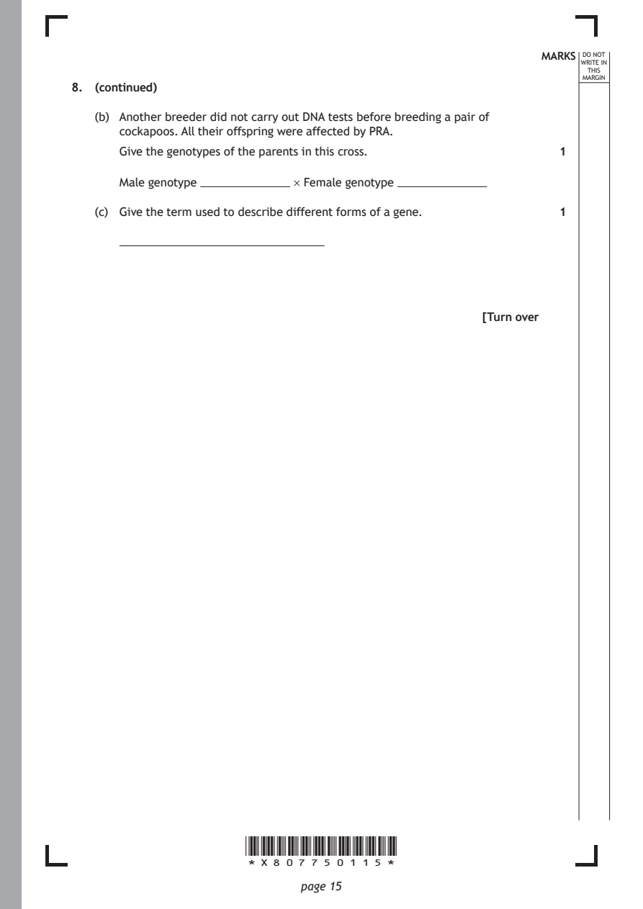
Selectable page text
MARKS _{W}^{D}_{R}^{O}_{I} _{T}^{N}OT
E IN
THIS
MARGIN
8. (continued)
(b) Another breeder did not carry out DNA tests before breeding a pair of
cockapoos. All their offspring were affected by PRA.
Give the genotypes of the parents in this cross. 1
Male genotype ��������������������������� × Female genotype ���������������������������
(c) Give the term used to describe different forms of a gene. 1
[Turn over
*X807750115*
page 15PDF page 16
Paper 2, Question 9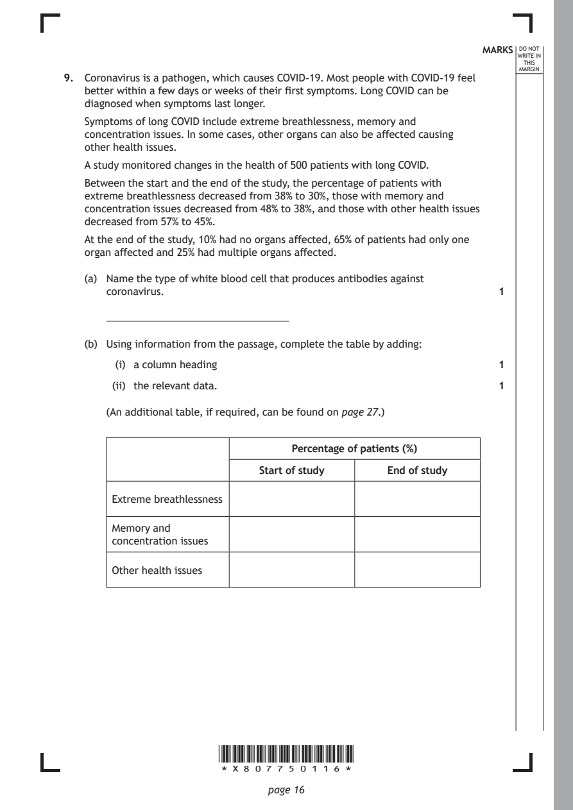
Selectable page text
MARKS _{W}^{D}_{R}^{O}_{I} _{T}^{N}OT
E IN
THIS
MARGIN
9. Coronavirus is a pathogen, which causes COVID‑19. Most people with COVID‑19 feel
better within a few days or weeks of their first symptoms. Long COVID can be
diagnosed when symptoms last longer.
Symptoms of long COVID include extreme breathlessness, memory and
concentration issues. In some cases, other organs can also be affected causing
other health issues.
A study monitored changes in the health of 500 patients with long COVID.
Between the start and the end of the study, the percentage of patients with
extreme breathlessness decreased from 38% to 30%, those with memory and
concentration issues decreased from 48% to 38%, and those with other health issues
decreased from 57% to 45%.
At the end of the study, 10% had no organs affected, 65% of patients had only one
organ affected and 25% had multiple organs affected.
(a) Name the type of white blood cell that produces antibodies against
coronavirus. 1
(b) Using information from the passage, complete the table by adding:
(i) a column heading 1
(ii) the relevant data. 1
(An additional table, if required, can be found on page 27.)
Percentage of patients (%)
Start of study End of study
Extreme breathlessness
Memory and
concentration issues
Other health issues
*X807750116*
page 16PDF page 17
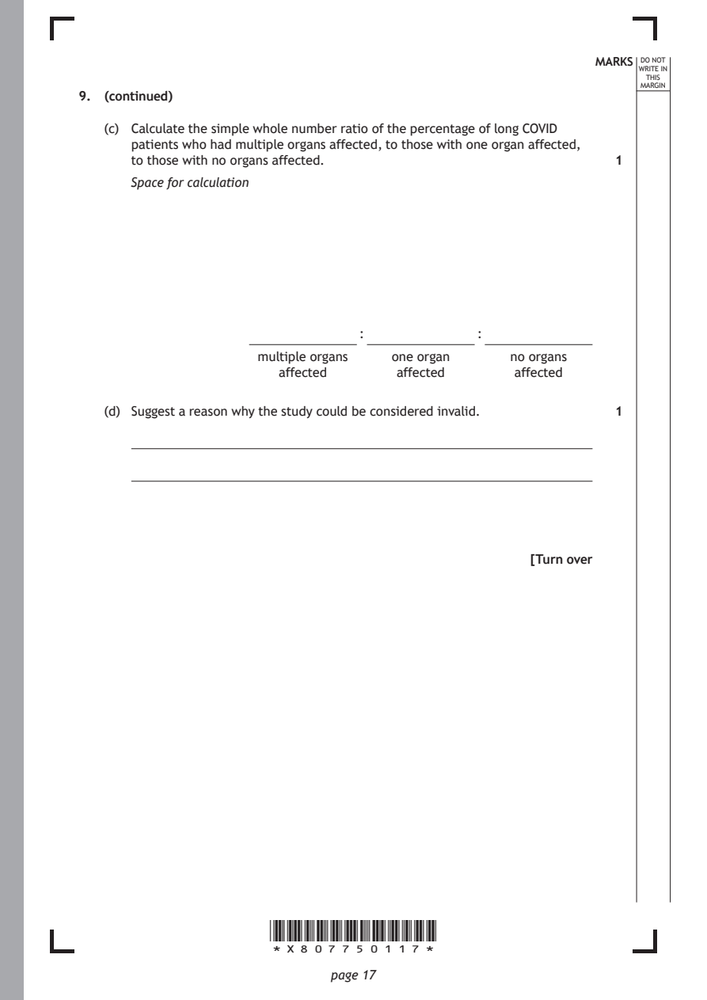
Selectable page text
MARKS _{W}^{D}_{R}^{O}_{I} _{T}^{N}OT
E IN
THIS
MARGIN
9. (continued)
(c) Calculate the simple whole number ratio of the percentage of long COVID
patients who had multiple organs affected, to those with one organ affected,
to those with no organs affected. 1
Space for calculation
: :
multiple organs one organ no organs
affected affected affected
(d) Suggest a reason why the study could be considered invalid. 1
[Turn over
*X807750117*
page 17PDF page 18
Paper 2, Question 10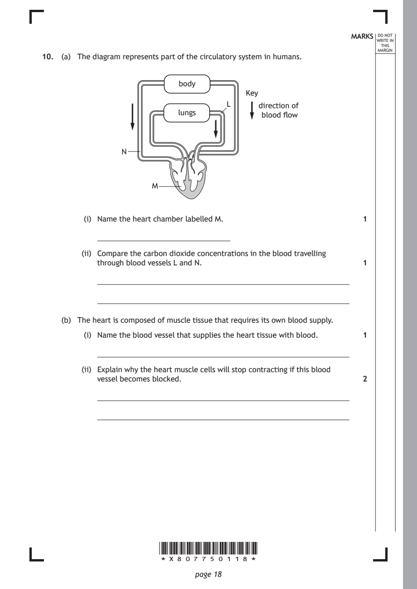
Selectable page text
MARKS _{W}^{D}_{R}^{O}_{I} _{T}^{N}OT
E IN
THIS
MARGIN
10. (a) The diagram represents part of the circulatory system in humans.
body
Key
L direction of
lungs
blood flow
N
M
(i) Name the heart chamber labelled M. 1
(ii) Compare the carbon dioxide concentrations in the blood travelling
through blood vessels L and N. 1
(b) The heart is composed of muscle tissue that requires its own blood supply.
(i) Name the blood vessel that supplies the heart tissue with blood. 1
(ii) Explain why the heart muscle cells will stop contracting if this blood
vessel becomes blocked. 2
*X807750118*
page 18PDF page 19
Paper 2, Question 11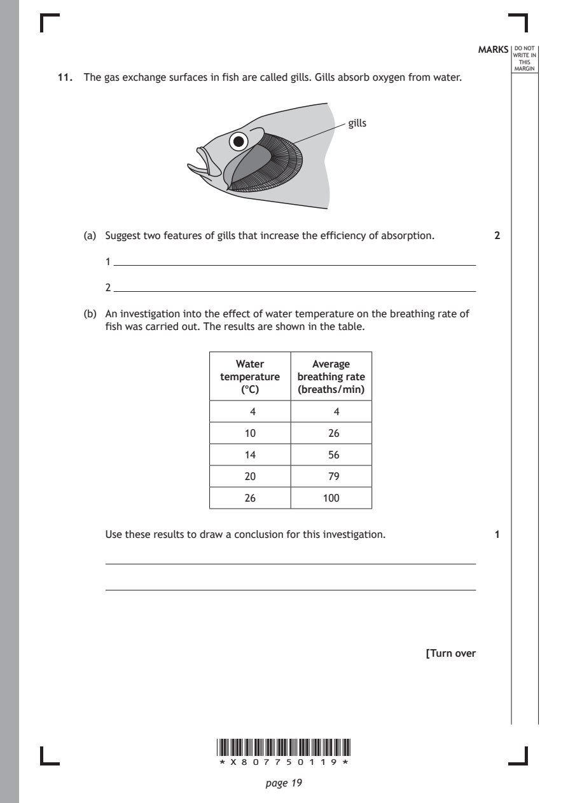
Selectable page text
MARKS _{W}^{D}_{R}^{O}_{I} _{T}^{N}OT
E IN
THIS
MARGIN
11. The gas exchange surfaces in fish are called gills. Gills absorb oxygen from water.
gills
(a) Suggest two features of gills that increase the efficiency of absorption. 2
1
2
(b) An investigation into the effect of water temperature on the breathing rate of
fish was carried out. The results are shown in the table.
Water Average
temperature breathing rate
(°C) (breaths/min)
4 4
10 26
14 56
20 79
26 100
Use these results to draw a conclusion for this investigation. 1
[Turn over
*X807750119*
page 19PDF page 20
Paper 2, Question 12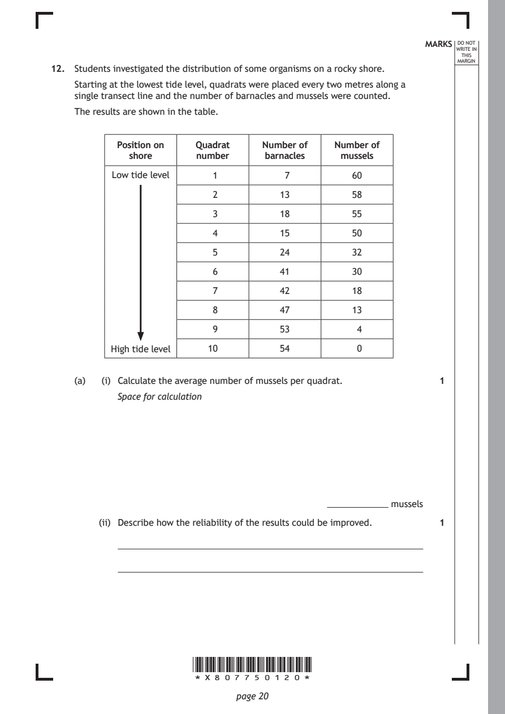
Selectable page text
MARKS _{W}^{D}_{R}^{O}_{I} _{T}^{N}OT
E IN
THIS
MARGIN
12. Students investigated the distribution of some organisms on a rocky shore.
Starting at the lowest tide level, quadrats were placed every two metres along a
single transect line and the number of barnacles and mussels were counted.
The results are shown in the table.
Position on Quadrat Number of Number of
shore number barnacles mussels
Low tide level 1 7 60
2 13 58
3 18 55
4 15 50
5 24 32
6 41 30
7 42 18
8 47 13
9 53 4
High tide level 10 54 0
(a) (i) Calculate the average number of mussels per quadrat. 1
Space for calculation
mussels
(ii) Describe how the reliability of the results could be improved. 1
*X807750120*
page 20PDF page 21
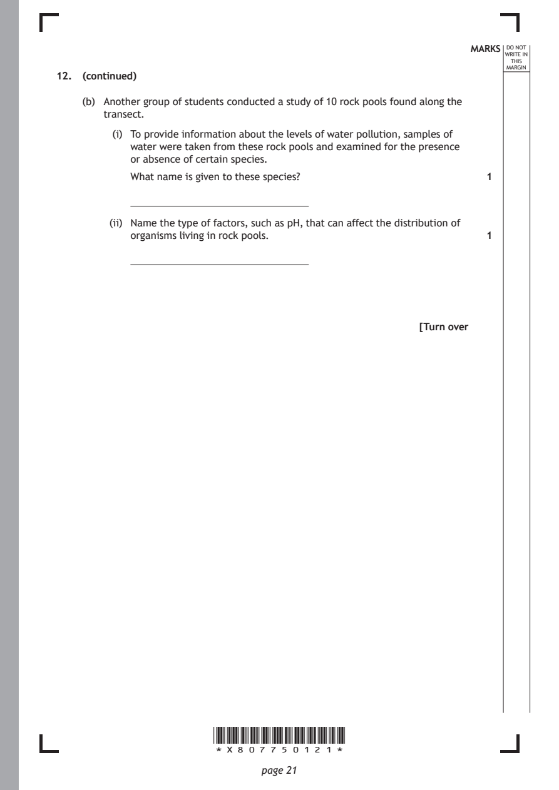
Selectable page text
MARKS _{W}^{D}_{R}^{O}_{I} _{T}^{N}OT
E IN
THIS
MARGIN
12. (continued)
(b) Another group of students conducted a study of 10 rock pools found along the
transect.
(i) To provide information about the levels of water pollution, samples of
water were taken from these rock pools and examined for the presence
or absence of certain species.
What name is given to these species? 1
(ii) Name the type of factors, such as pH, that can affect the distribution of
organisms living in rock pools. 1
[Turn over
*X807750121*
page 21PDF page 22
Paper 2, Question 13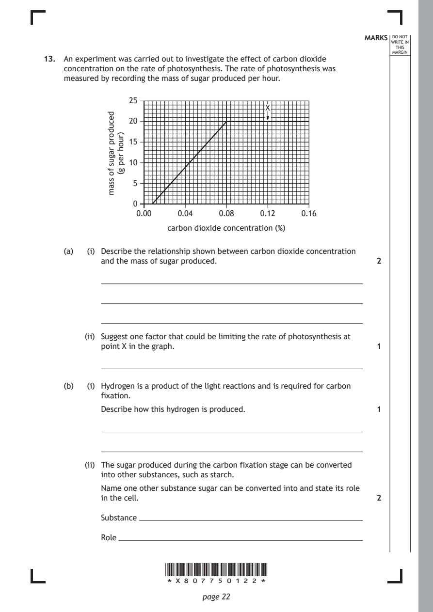
Selectable page text
MARKS _{W}^{D}_{R}^{O}_{I} _{T}^{N}OT
E IN
THIS
MARGIN
13. An experiment was carried out to investigate the effect of carbon dioxide
concentration on the rate of photosynthesis. The rate of photosynthesis was
measured by recording the mass of sugar produced per hour.
*X807750122*
page 22
decudorp
ragus
fo
ssam
)ruoh
rep
g(
25
X
20
15
10
5
0
0.00 0.04 0.08 0.12 0.16
carbon dioxide concentration (%)
(a) (i) Describe the relationship shown between carbon dioxide concentration
and the mass of sugar produced. 2
(ii) Suggest one factor that could be limiting the rate of photosynthesis at
point X in the graph. 1
(b) (i) Hydrogen is a product of the light reactions and is required for carbon
fixation.
Describe how this hydrogen is produced. 1
(ii) The sugar produced during the carbon fixation stage can be converted
into other substances, such as starch.
Name one other substance sugar can be converted into and state its role
in the cell. 2
Substance
RolePDF page 23
Paper 2, Question 14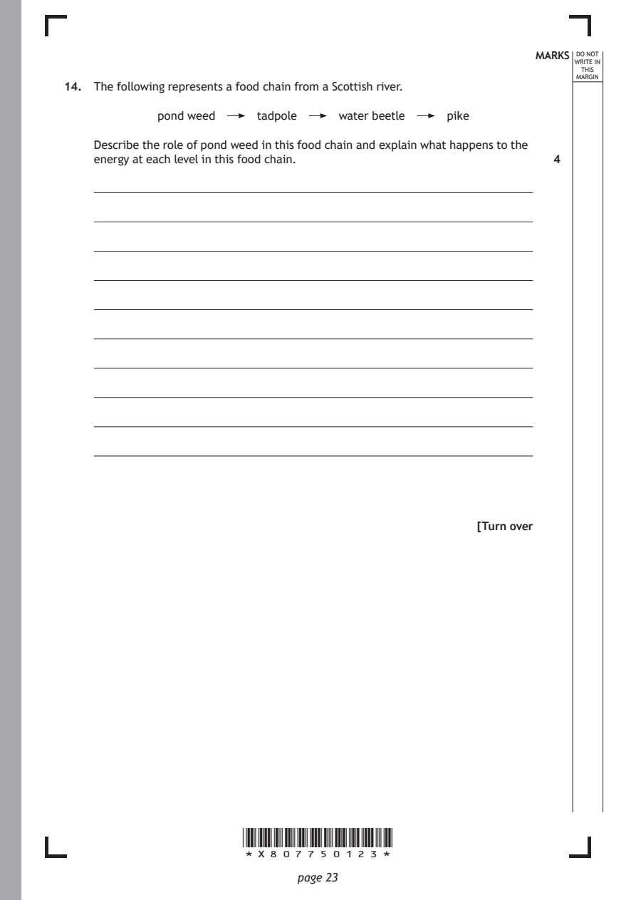
Selectable page text
MARKS _{W}^{D}_{R}^{O}_{I} _{T}^{N}OT
E IN
THIS
MARGIN
14. The following represents a food chain from a Scottish river.
pond weed tadpole water beetle pike
Describe the role of pond weed in this food chain and explain what happens to the
energy at each level in this food chain. 4
[Turn over
*X807750123*
page 23PDF page 24
Paper 2, Question 15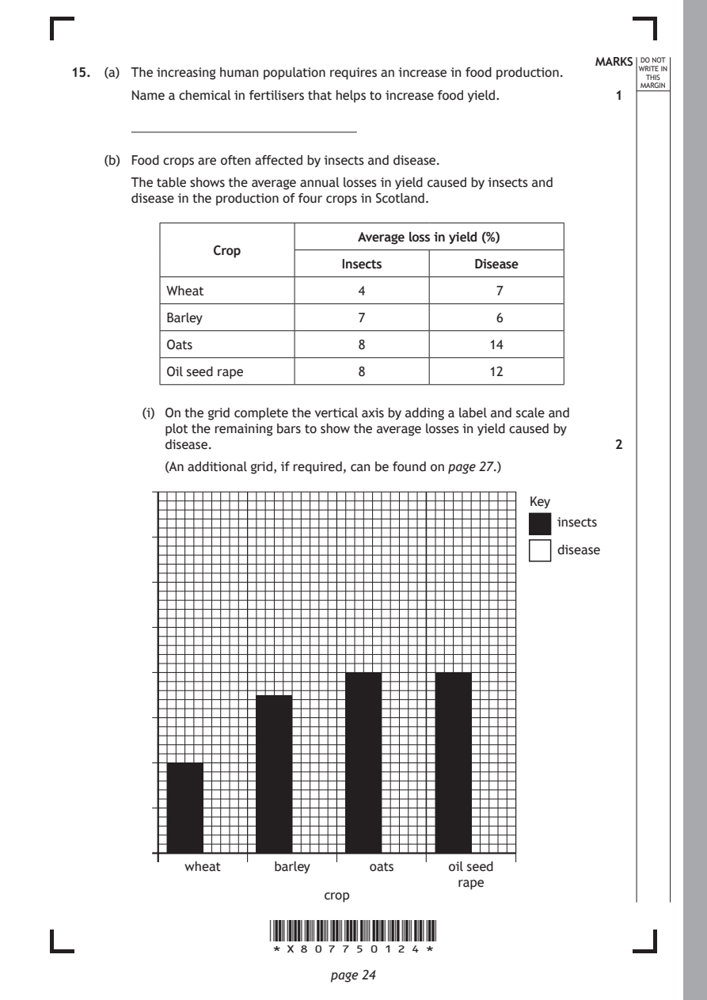
Selectable page text
MARKS _{W}^{D}_{R}^{O}_{I} _{T}^{N}OT
15. (a) The increasing human population requires an increase in food production. E IN
THIS
ARGIN
Name a chemical in fertilisers that helps to increase food yield. 1 ^{M}
(b) Food crops are often affected by insects and disease.
The table shows the average annual losses in yield caused by insects and
disease in the production of four crops in Scotland.
Average loss in yield (%)
Crop
Insects Disease
Wheat 4 7
Barley 7 6
Oats 8 14
Oil seed rape 8 12
(i) On the grid complete the vertical axis by adding a label and scale and
plot the remaining bars to show the average losses in yield caused by
disease. 2
(An additional grid, if required, can be found on page 27.)
Key
insects
disease
wheat barley oats oil seed
rape
crop
*X807750124*
page 24PDF page 25
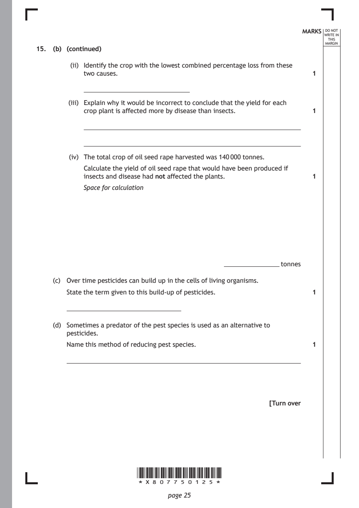
Selectable page text
MARKS _{W}^{D}_{R}^{O}_{I} _{T}^{N}OT
E IN
THIS
MARGIN
15. (b) (continued)
(ii) Identify the crop with the lowest combined percentage loss from these
two causes. 1
(iii) Explain why it would be incorrect to conclude that the yield for each
crop plant is affected more by disease than insects. 1
(iv) The total crop of oil seed rape harvested was 140 000 tonnes.
Calculate the yield of oil seed rape that would have been produced if
insects and disease had not affected the plants. 1
Space for calculation
tonnes
(c) Over time pesticides can build up in the cells of living organisms.
State the term given to this build‑up of pesticides. 1
(d) Sometimes a predator of the pest species is used as an alternative to
pesticides.
Name this method of reducing pest species. 1
[Turn over
*X807750125*
page 25PDF page 26
Paper 2, Question 16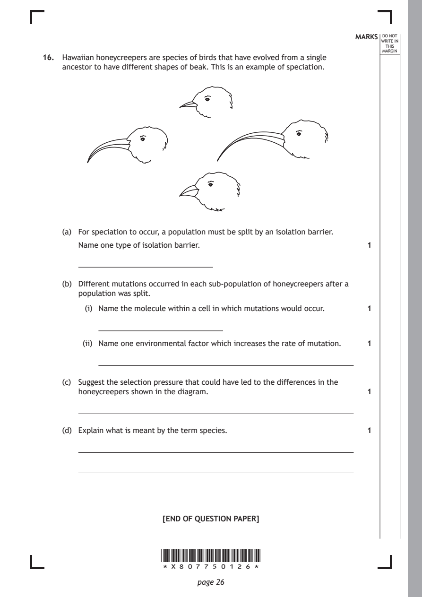
Selectable page text
MARKS _{W}^{D}_{R}^{O}_{I} _{T}^{N}OT
E IN
THIS
MARGIN
16. Hawaiian honeycreepers are species of birds that have evolved from a single
ancestor to have different shapes of beak. This is an example of speciation.
(a) For speciation to occur, a population must be split by an isolation barrier.
Name one type of isolation barrier. 1
(b) Different mutations occurred in each sub‑population of honeycreepers after a
population was split.
(i) Name the molecule within a cell in which mutations would occur. 1
(ii) Name one environmental factor which increases the rate of mutation. 1
(c) Suggest the selection pressure that could have led to the differences in the
honeycreepers shown in the diagram. 1
(d) Explain what is meant by the term species. 1
[END OF QUESTION PAPER]
*X807750126*
page 26PDF page 27
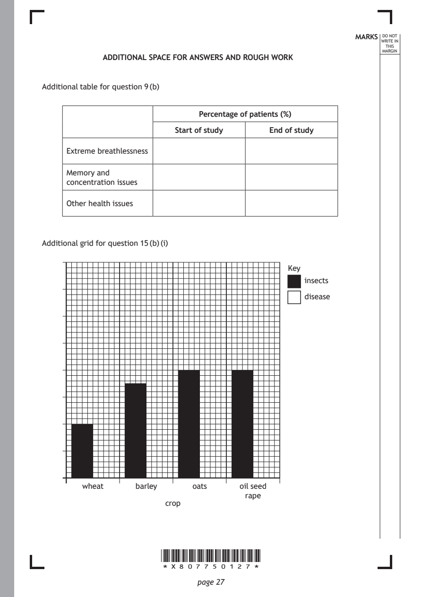
Selectable page text
MARKS _{W}^{D}_{R}^{O}_{I} _{T}^{N}OT
E IN
THIS
MARGIN
ADDITIONAL SPACE FOR ANSWERS AND ROUGH WORK
Additional table for question 9 (b)
Percentage of patients (%)
Start of study End of study
Extreme breathlessness
Memory and
concentration issues
Other health issues
Additional grid for question 15 (b) (i)
Key
insects
disease
wheat barley oats oil seed
rape
crop
*X807750127*
page 27PDF page 28
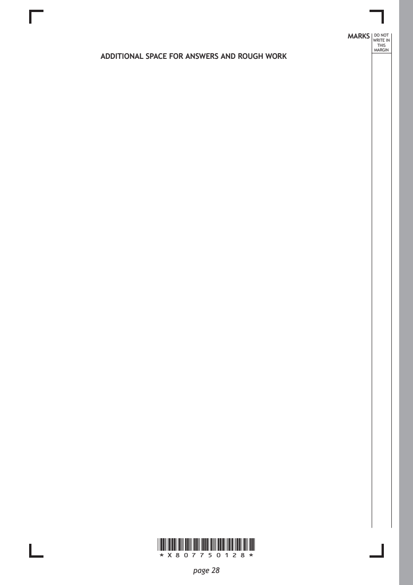
Selectable page text
MARKS _{W}^{D}_{R}^{O}_{I} _{T}^{N}OT
E IN
THIS
MARGIN
ADDITIONAL SPACE FOR ANSWERS AND ROUGH WORK
*X807750128*
page 28PDF page 29
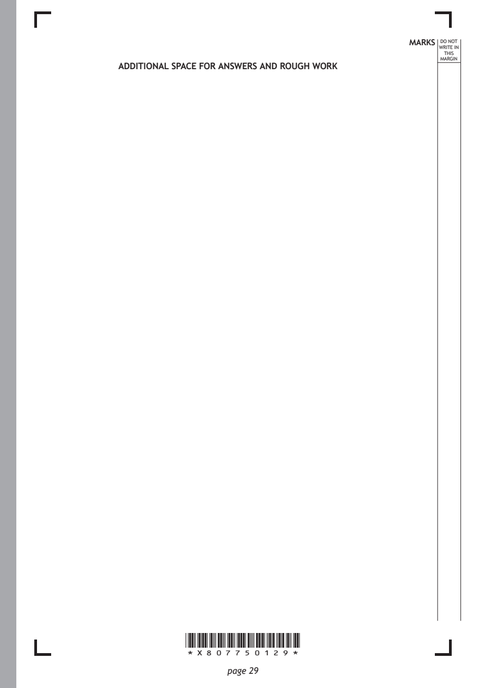
Selectable page text
MARKS _{W}^{D}_{R}^{O}_{I} _{T}^{N}OT
E IN
THIS
MARGIN
ADDITIONAL SPACE FOR ANSWERS AND ROUGH WORK
*X807750129*
page 29PDF page 30
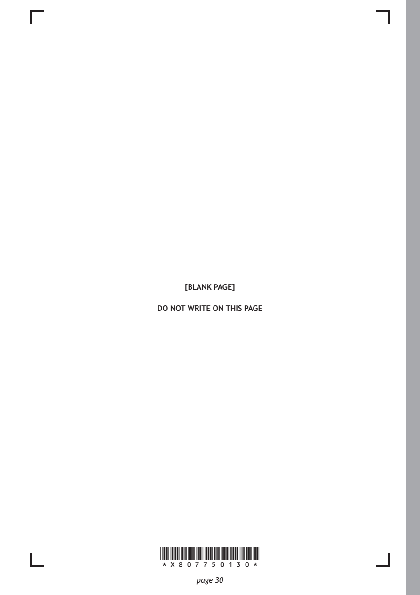
Selectable page text
[BLANK PAGE]
DO NOT WRITE ON THIS PAGE
*X807750130*
page 30PDF page 31
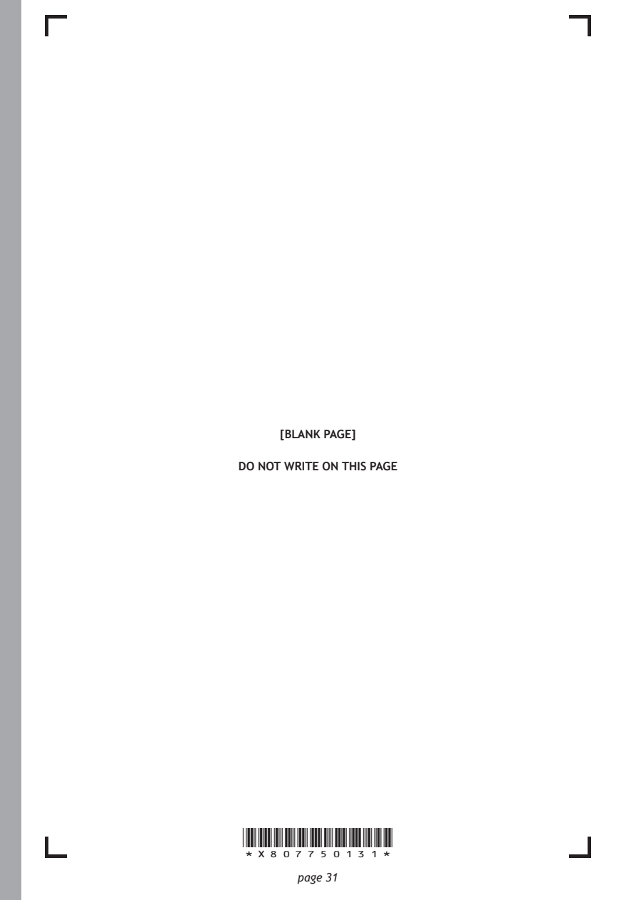
Selectable page text
[BLANK PAGE]
DO NOT WRITE ON THIS PAGE
*X807750131*
page 31PDF page 32
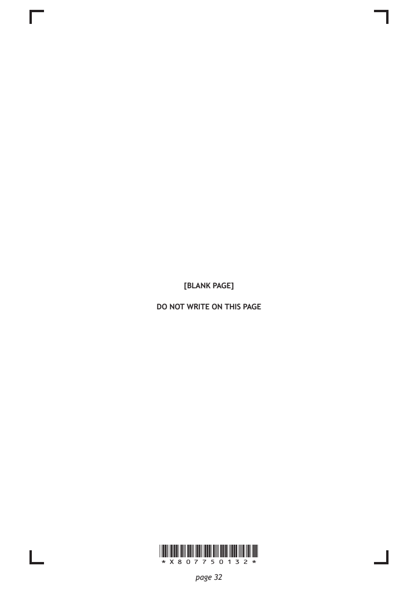
Selectable page text
[BLANK PAGE]
DO NOT WRITE ON THIS PAGE
*X807750132*
page 32